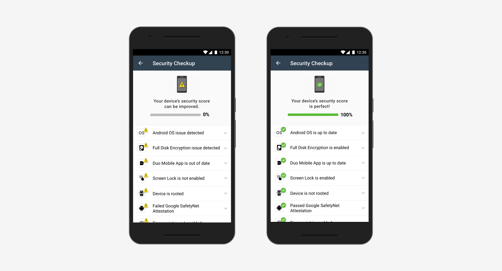

Design Internship at Duo Security
Redesigned the Security feature on Duo Mobile, moderated usability tests and learnt a great deal from the Design team
- Task: Redesign the Security Checkup feature for a GA release
- What I did: User journey map, sketching, prototyping, usability testing, assets generation, icon design, content strategy, collaborative work with developers and researchers
Duo Mobile works with Duo Security's 2-factor authentication service and can generate passcodes for login and receive push notifications for easy, one-tap authentication.
My primary project as a designer on the mobile team, was to redesign the Security Checkup feature. This feature was released as a Beta* feature (Admin account only) in early 2017, and was slated for a General Availability (GA) release in Fall 2017. This meant that the target audience now included all users of Duo Mobile and not just Admin users. Redesigning the feature for a different target audience provided me an opportunity to work on various aspects of the project such as iconography, language and interactions.
*Duo test new features by releasing them to a small subset of users running a Beta version of Duo Mobile
——
THE SECURITY CHECKUP FEATURE
The Security Checkup feature, meant to check security hygiene of a device, had two aspects to it – Why and How. By alerting the user to security issues on their device such as no passcode, out of date OS, etc. it aimed to highlight good practices (eg. Why should you have a passcode?) and provide instructions for remediation of the detected issue (How to enable a passcode?).
——
NEEDED SMALL DESIGN FIXES
The feature in its Beta phase did a good job at explaining why a particular good security practice was important but did not provide detailed enough instructions for remediation of the issue. Moreover, the feature was grouped on the home screen, with another feature, that was going to be taken out for the GA release. This meant that it was necessary to rethink where the Security Checkup feature would be located and how would a user interact with it. Lastly, we wanted users to perceive the feature as a 'helper' rather than just an alert. We found out that this could be achieved by using a different alert icon and changing the text.

——
WHAT I DELIVERED
By the end of my internship, I had -
- Redesigned the flow, icons, text and delivered high quality assets for Security Checkup feature on Duo Mobile (Android)
- Designed a small functionality in the Duo Admin Panel for turning on the feature
- Moderated 4 usability testing sessions
- Worked collaboratively with user researchers and developers
——
HOW I DID IT
My mentor played a huge role in shaping the project - through regular 1:1 meetings, we were able to narrow down the scope of the project and establish a timeline. The timeline accounted for various phases such as brainstorming, designing and frequent feedback/ standup sessions. I rapidly designed and verified the prototypes by hallway testing* them and also showing it to the much experienced designers in the Product Design team. I also found it beneficial to get opinions on my designs from a different perspective such as a developer's.
*Hallway testing, as the name implies, is a quick way of testing design concepts by utilizing bystanders in a hallway (or a high foot traffic area) as test participants
I. Changing the Alert icon
Some users had no control over a few security issues (such as manufacturers discontinuing OS updates for old phones, especially for Android). The strong language and red alert icons for these flagged issues made such users feel helpless and resulted into frustration. To alleviate this issue, I decided to change the way users perceived an alert by redesigning the icon. In this process, I looked at how existing products such as antivirus softwares handled alerts and created different iterations by tweaking the symbols and colors.
The various iterations were put to test through hallway testing and the design team’s stand-up sessions. Factoring in the feedback from these sessions, I decided to choose the icon that provided a high contrast and was easily distinguishable from the green (all okay) icon. To arrive at this final design, I changed the color of the alert icon from red to yellow and used an exclamation mark instead of an X to make it resemble a warning. The shape of the icon was also changed from a circle to a triangle to distinguish it from the green (all okay) icon.
II. Changing the landing text and instructions
There were cases where Android users who had enabled Full Disk Encryption (FDE) were getting notified by the feature stating that their FDE was disabled, leading to confusion. It was found that devices having FDE enabled but with no passcode enabled were not passing the security test done by the feature. Remediation instructions that factored in such cases were missing in the Beta version. Additionally, the text label explicitly saying ‘FDE not enabled’ added to the confusion at the user’s end.

My first step was to change the language from 'FDE not enabled' to 'FDE issue detected’ in the text label. Next, I added some landing text in the dropdown to provide more context to the text label and lead the user to further actions. As the remediation instructions had to account for normal cases (FDE not enabled) and edge cases (FDE enabled + no passcode), I decided to create separate pages for these two cases. Information relating to the importance of enabling FDE (Why) was placed with the normal case (not enabled). Laying out the information in this way helped reduce the amount of text under each dropdown label on the main screen and prevented users from getting confused.

It was also challenging to design for the Call to Action (CTA) links for How and Why. We wanted the users to understand that these links would lead to a new page in the app itself and not to a new page in the browser. It was necessary to make these links appear as clickable to the users. I changed the tone of the text in the links to first person to make them stand out from the landing text under each label. I also added a slight background fill for the links to make them pop out on the screen. This design concept tested well through hallway testing as the test subjects were successful in interpreting the nature of these links and were able to navigate the scenario provided to them.
III. Changing the interaction
There were two ways a user could access the Security Checkup feature in the Beta version – by clicking on the feature on the main screen or by going to Settings menu of Duo Mobile. We did not want the feature to persist on the main screen as it would take up space and also distract the user from approving push notifications. To tackle this issue, I worked closely with an engineering intern on the Mobile team to brainstorm different ways of showing the feature.
We came up with the simple idea of a pop-up and thought of testing it out. However, this idea of the feature popping-up on the main screen tested poorly in hallway testing. The test subjects reported thinking that they would need to dismiss the pop-up before approving any notifications in the app. This exploration did not work well, so we got back to the whiteboard.
Through a feedback session with my mentor, we came up with a toast-like functionality for the feature. This design concept tested well through initial testing and was approved by the Product Manager on the team. The final step involved ironing out the kinks in the flow of this feature. Designing a user journey map to view the feature from a user’s perspective proved to be really valuable in conceptualizing the entire behavior of the feature. By putting ourselves in our user's shoes, we were able to find out the pain points in the flow that would have lead to a poor experience at the user’s end.
——
SO WHAT HAPPENED NEXT
With the designs tested and approved by the senior designers, I handed them off to the developers though a tool called Zepelin. I developed the Android UI screens only while the iOS ones were developed based off my designs. Text (landing text + remediation instructions) and assets (icons and illustrations) were some of the other deliverables that I delivered to the developers. The feature was released in late September and was made available to all Duo users. However, to enable access to this feature for all users in an environment, IT Admins need to configure this feature through the Admin Panel first.
——
LOOKING BACK AT A WONDERFUL SUMMER
I am fortunate to have spent my summer at a wonderful company being surrounded by some of the kindest people I have ever met. Working on the Security Checkup feature with almost full autonomy was daunting, as I always had the mindset that I might mess something up. But my mentor's guidance and support was something that I will always be grateful for.
Working in a professional environment at Duo made me aware of my weaknesses as a designer and helped polish my communication skills while the collaborative work with developers taught me about proper methods for documentation and handing over design assets. But my most important thing I will take away from this internship is learning how to be confident in my design decision and be able to defend them while still respecting other’s opinions.

The fabulous interns at Duo Security